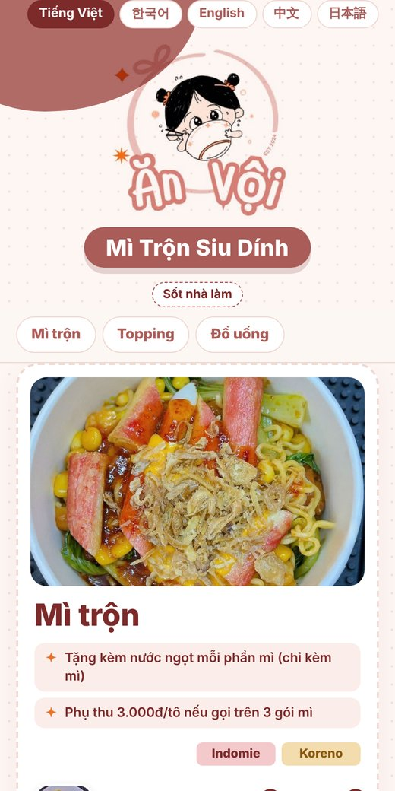
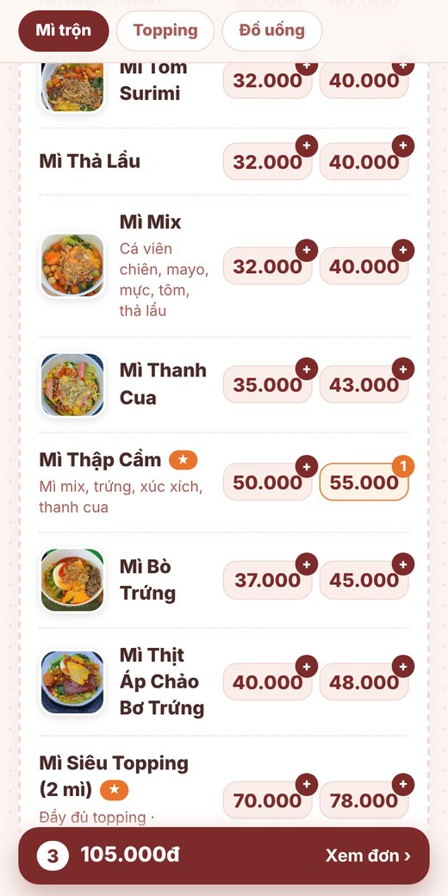
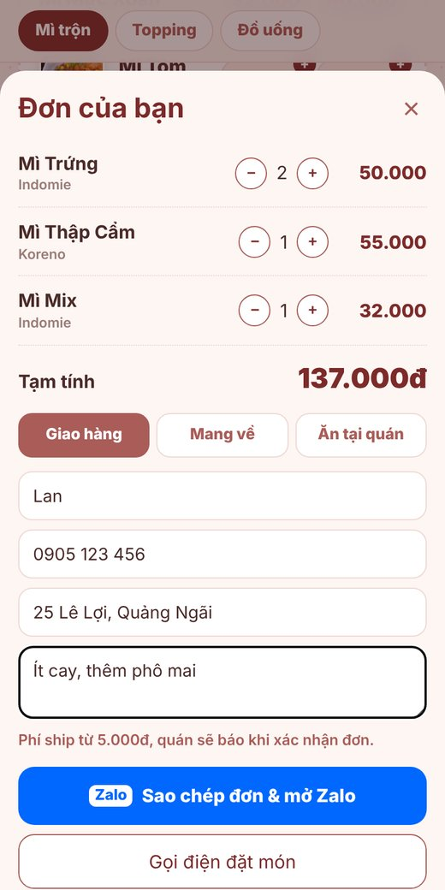
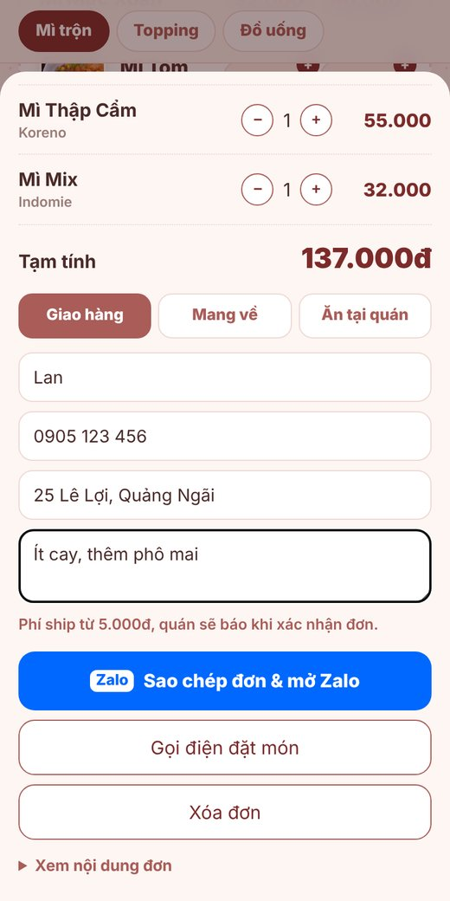

Hướng dẫn sử dụng
Menu QR & Đặt món qua Zalo
Dành cho chủ quán và nhân viên Ăn Vội – Mì Trộn Siu Dính
anvoi-menu.vercel.app

Quét thử
1Menu QR này làm được gì?
Cho khách
- Quét mã QR trên bàn là xem menu ngay, không cần cài app.
- Menu tự đổi sang ngôn ngữ trên điện thoại của khách: Việt, Hàn, Anh, Trung, Nhật.
- Chọn món, xem tổng tiền, gửi đơn cho quán qua Zalo.
- Gọi điện, xem đường đi Google Maps chỉ với một chạm.
Cho quán
- Đơn gửi đến Zalo 0969 092 694, luôn bằng tiếng Việt – kể cả khi khách là người nước ngoài.
- Đơn ghi rõ: món, số lượng, Indomie/Koreno, tổng tiền, hình thức, tên, SĐT, địa chỉ, ghi chú.
- Đổi giá, thêm/bớt món: chỉ cần nhắn, mã QR giữ nguyên, không phải in lại.
2Khách đặt món như thế nào?

1Quét mã QR
Menu mở ra bằng ngôn ngữ của khách.

2Bấm vào giá để chọn món
Mì: bấm giá Indomie hoặc Koreno. Số trên nút là số lượng.

3Bấm “Xem đơn”
Chỉnh số lượng, chọn Giao hàng / Mang về / Ăn tại quán, điền tên, SĐT, địa chỉ.

4“Sao chép đơn & mở Zalo”
Zalo của quán mở ra, khách dán và bấm gửi.
* Khách ăn tại quán có thể chỉ cần đưa màn hình “Đơn của bạn” cho nhân viên, không bắt buộc gửi Zalo.
3Quán nhận được tin nhắn như thế này
Zalo
🍜 ĐƠN HÀNG – Ăn Vội
• 2 x Mì Trứng (Indomie) – 50.000đ
• 1 x Mì Thập Cẩm (Koreno) – 55.000đ
• 1 x Mì Mix (Indomie) – 32.000đ
Tạm tính: 137.000đ
Hình thức: Giao hàng
Tên: Lan
SĐT: 0905 123 456
Địa chỉ: 25 Lê Lợi, Quảng Ngãi
Ghi chú: Ít cay, thêm phô mai
(Khách dùng Tiếng Hàn)
- • 2 x …
- Số lượng × tên món – thành tiền.
- (Indomie)
- Loại mì khách chọn: Indomie hoặc Koreno.
- Tạm tính
- Tổng tiền món, chưa gồm phí ship.
- Hình thức
- Giao hàng / Mang về / Ăn tại quán.
- Ghi chú
- Độ cay, phô mai, nước ngọt Thái, yêu cầu khác.
- (Khách dùng …)
- Khách là người nước ngoài. Nên trả lời ngắn gọn, có thể dùng số và biểu tượng (✅ 🛵 💵).
4Quy trình xử lý đơn (cho nhân viên)
- Nhận tin nhắn Zalo – kiểm tra món, loại mì, số lượng và ghi chú.
Thiếu thông tin (loại mì, loại nước…)? Hỏi lại khách ngay trên Zalo.
- Tính phí ship (đơn Giao hàng) theo khoảng cách, cộng vào Tạm tính.
Đơn giao hàng tối thiểu 50.000đ, phí ship từ 5.000đ. Gom đơn trường học và lân cận: miễn phí ship.
- Xác nhận đơn với khách: tổng tiền và thời gian dự kiến.
Mẫu: ✅ Quán đã nhận đơn. Tổng 142.000đ (ship 5.000đ). Khoảng 25 phút giao tới ạ 🛵
- Làm món theo đơn – kiểm tra loại mì (Indomie / Koreno) và topping.
- Giao / đưa món & thu tiền. Mang về: kèm combo nước + khăn ướt. Mì: tặng kèm nước ngọt.
5Lưu ý & cập nhật menu
| Trường hợp | Cách làm |
|---|
| Đổi giá, thêm / bớt món, hết món | Nhắn nội dung cần đổi cho người quản lý menu. Trang web cập nhật trong ngày, mã QR không đổi. |
| Món có giá dao động (phô mai thêm, nước ngọt Thái) | Không có nút chọn – khách ghi vào phần Ghi chú, quán báo giá khi xác nhận. |
| Trên 3 gói mì | Phụ thu 3.000đ/tô – cộng thêm khi xác nhận đơn. |
| Khách không gửi được Zalo | Khách có thể bấm “Gọi điện đặt món” hoặc đưa màn hình đơn cho nhân viên. |
| Thẻ QR | In thẻ A6 (hoặc 4 thẻ trên A4), đặt ở bàn và quầy. Nên ép plastic mờ để dễ quét. |
Cần đổi menu hoặc hỗ trợ? Nhắn Zalo 0917 302 200